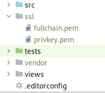
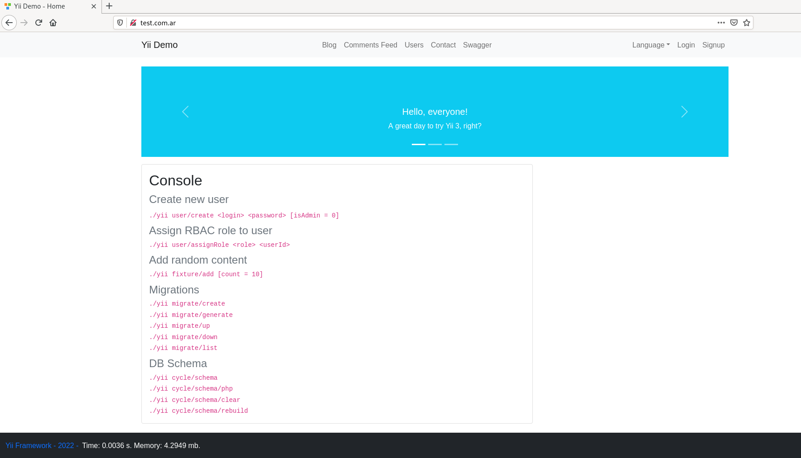
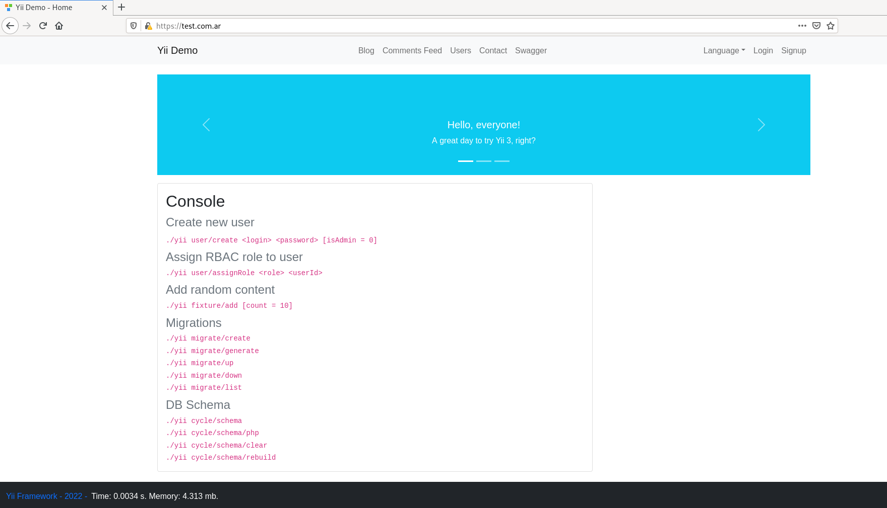

HTTPS con docker compose y apache
Veremos como configurar Docker Compose con Apache para que funcione con el protocolo HTTPS.
Como ejemplo de sitio usaremos una demo realizada por el framework Yii.
1- Editar el archivo hosts en el sistema operativo
Antes que nada, mientras estamos trabajando en el entorno de desarrollo, tendremos que configurar un dominio para poder probar el HTTPS. De esta manera, cuando hagamos la prueba del sitio web, en lugar de entrar a localhost en el navegador, entraremos el dominio que hayamos seleccionado. Supongamos que el dominio que elegimos es test.com.ar.
Debemos editar el archivo hosts. Su ubicación depende del sistema operativo, en Linux lo encontramos en /etc/hosts y en Windows en C:\Windows\System32\drivers\etc\hosts. Este archivo lo usa el sistema operativo para mapear una dirección IP a un nombre de host o nombre de dominio.
En el archivo agregaremos la siguiente línea:
127.0.0.1 test.com.ar
2- Clonar o crear el proyecto
Para explicar este artículo usaremos un proyecto ya listo que se encuentra en github. El proyecto es una demo provista por el framework Yii. Lo que hice fue un fork del repositorio a mi cuenta. En el momento de hacer este artículo el fork lo hice a partir del commit f19cc5898911d365310df664415c83e4ef8a8c85. La demo en mi cuenta la puedes encontrar aquí.
3- Obtener certificados
Para que nuestra web funcione bajo el protocolo HTTPS es necesario tener instalado un certificado SSL, que será el encargado de cifrar las conexiones entre nuestro navegador y el servidor donde está alojada la web que queremos visitar para que toda la información intercambiada entre ambos no esté accesible de ningún modo.
No profundizaremos sobre este tema pero puede obtener certificados gratuitos a través de Let’s Encrypt o StartSSL.
Supongamos que el certificado tiene el nombre fullchain.pem y su clave primaria es privkey.pem. Agregaremos estos archivos en una carpeta llamada ssl creada en la ruta del proyecto y añadiremos dicha carpeta en el .gitignore, ya que es información sensible:

4- Crear los archivos de configuración de sitio de apache
Para esto creamos una carpeta llamada sites-available en la ruta del proyecto y agregamos los archivos 000-default.conf y default-ssl.conf, donde sus contenidos correspondientes serán los siguientes:
000-default.conf
<Directory /app/public/>
Options Indexes FollowSymLinks
AllowOverride All
Require all granted
</Directory>
<VirtualHost *:80>
ServerAdmin webmaster@localhost
DocumentRoot /app/public
ErrorLog ${APACHE_LOG_DIR}/error.log
CustomLog ${APACHE_LOG_DIR}/access.log combined
</VirtualHost>
default-ssl.conf
<IfModule mod_ssl.c>
<VirtualHost _default_:443>
ServerAdmin webmaster@localhost
DocumentRoot /app/public
ErrorLog ${APACHE_LOG_DIR}/error.log
CustomLog ${APACHE_LOG_DIR}/access.log combined
SSLEngine on
SSLCertificateFile /var/imported/ssl/fullchain.pem
SSLCertificateKeyFile /var/imported/ssl/privkey.pem
<FilesMatch "\.(cgi|shtml|phtml|php)$">
SSLOptions +StdEnvVars
</FilesMatch>
<Directory /usr/lib/cgi-bin>
SSLOptions +StdEnvVars
</Directory>
</VirtualHost>
</IfModule>
5- Configurar docker
Crearemos un archivo Dockerfile, que definirá nuestra imagen con el siguiente contenido:
FROM yiisoftware/yii-php:8.0-apache
RUN a2enmod rewrite
RUN a2enmod ssl
RUN a2ensite default-ssl
EXPOSE 80
EXPOSE 443
Como se puede ver, partimos de la misma imagen que el proyecto original, solo que habilitamos el SSL.
También modificamos el docker-compose.yml:
version: '3'
services:
php:
build:
context: .
dockerfile: Dockerfile
working_dir: /app
volumes:
- ./:/app
# host-volume for composer cache
- ~/.composer-docker/cache:/root/.composer/cache:delegated
- ./ssl:/var/imported/ssl
- ./sites-available:/etc/apache2/sites-available
ports:
- '80:80'
- '443:443'
Le modificamos la imagen a partir de la cuál se construye y pasamos los archivos SSL y de configuración de sitio que vimos anteriormente.
6- Correr la aplicación
Levante el sitio:
docker-compose up -d
Asegúrese de tener instaladas las librerías con compose:
docker-compose exec php composer install
Pruebe en el navegador entrando al sitio tanto con HTTP como con HTTPS:

